Thirty AIS classroom setups and around one hundred and fifty named techniques for turning
the room itself into part of the lesson. Open one strand. Run one setup this week.
Every setup gives prep time, numbered steps and the exact sentence the teacher says out loud.
Find your strand
Pick from what students are failing to DO, not from what you want on the wall.
A surface nobody writes on, moves or points at is decoration. Decoration is fine. It does not count as environment work.
Nothing laminated in its first fortnight.
If the build takes longer than the use, redesign it.
Show thinking, not finished work.
Attempts, crossings out, disagreements. A wall of perfect work teaches students that only perfect work belongs.
One strand per room per half term.
All six at once is a craft fair.
Say the activating sentence out loud.
Every setup has one. Unspoken surfaces get ignored, which trains students to ignore the walls.
01
Metacognition and self-regulated learning
Use this strand when: students finish the task but cannot say how, ask "is this right?" every two minutes, stall the second you walk away, or hand in work they never reread.
Start here today: tape six numbered card strips beside your door. That is the stuck ladder. Five minutes.
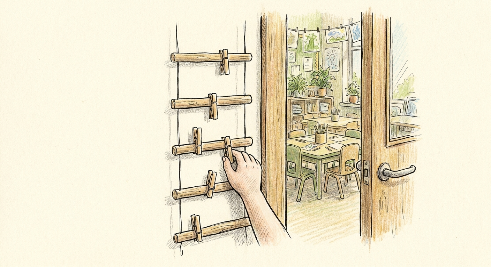
Stuck ladder
Door framePrep 5 min onceRuns itself
Cut six card strips, one colour, numbered 1 to 6.
Tape them vertically beside the door at seated eye height.
Write the moves before asking an adult: reread the question, check the model, check my book, ask my partner, try one line, ask the teacher.
First lesson, walk the class up the ladder out loud once.
Say this"Which rung are you on, and what did rung three tell you?"
Works because most students jump straight to the adult. Nobody named the steps between.
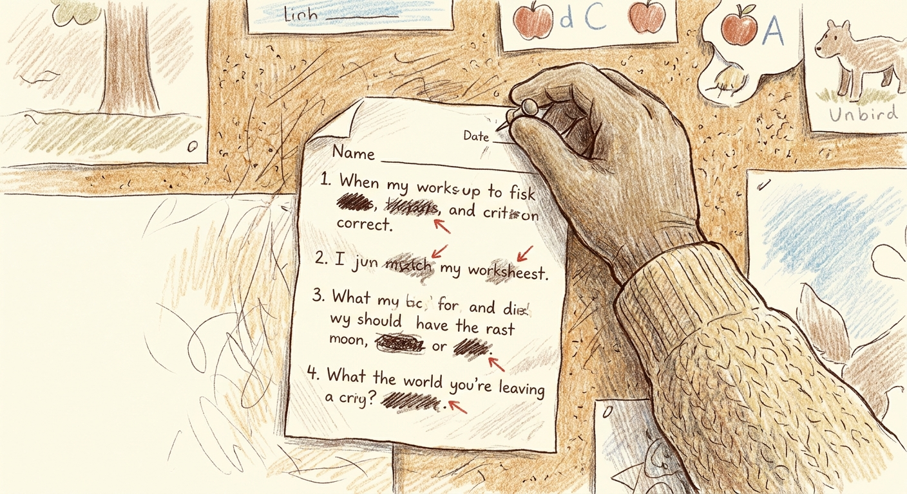
Live model, mistakes left in
Working wallPrep 06 min in lesson
Do the task in front of the class on the same paper and pen the students have.
Do not tidy it. Leave the crossings out.
Pin it on the working wall.
Annotate two spots only: "here I stopped and checked" and "here I changed my mind because".
Replace it every lesson or two.
Say this"Find where I changed my mind. Do the same on yours."
Works because perfect models hide the process. This one shows it.
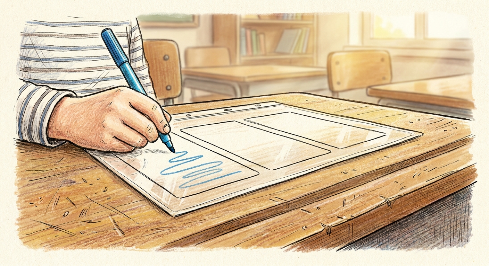
Plan boxes on the tabletop
DeskPrep 10 min once90 seconds
One A3 wipe-clean sleeve and one marker per pair.
Three boxes: what am I making, what makes it good, what is my first move.
Before any extended task, 90 seconds on the boxes, then pens down.
Students tick the first move when it is done.
Say this"Ninety seconds on your plan boxes, then pens down."
Works because planning is the cheapest phase to improve and the first one skipped.
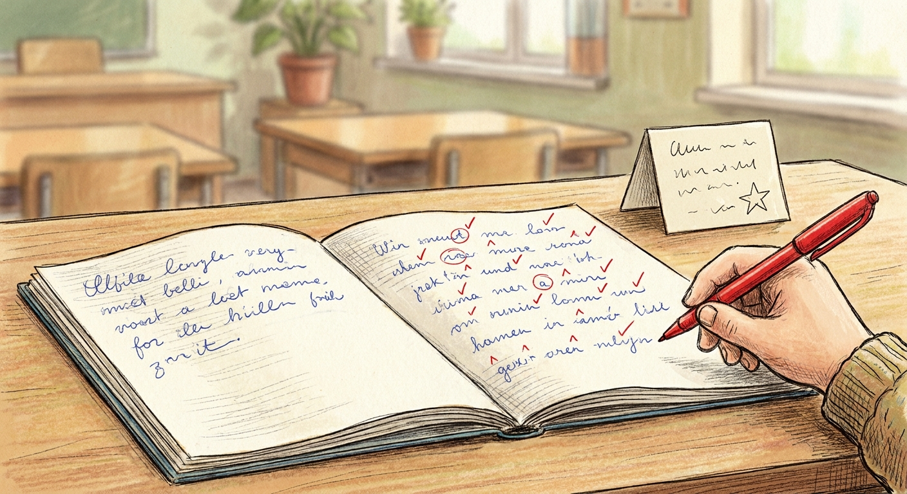
Two colour check
BooksPrep 5 min onceLast 5 min
Three subject-specific checks on a small card near the front. Change each half term.
Last five minutes, second-colour pen only.
Students reread and improve. Nothing new, only better.
Say this"Second colour out. Three checks. Nothing new, only better."
Works because it splits producing from evaluating, and leaves visible evidence that evaluating happened.
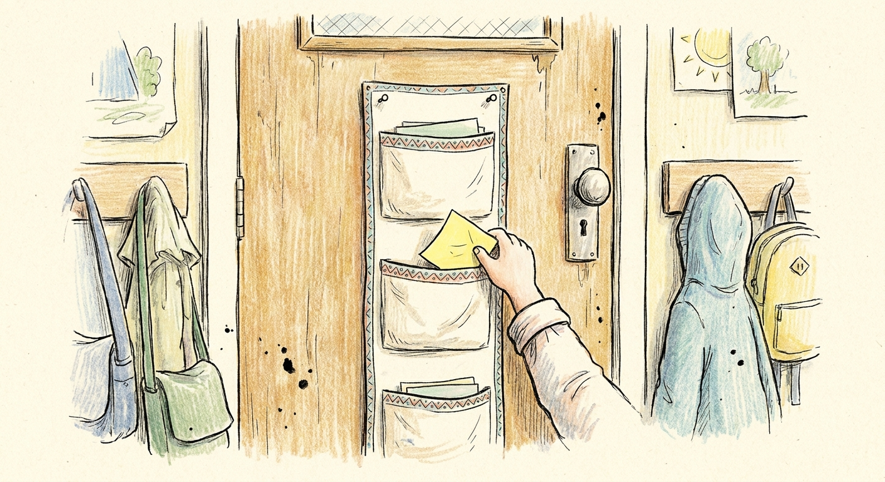
Exit strip on the back of the door
Back of doorPrep 10 min once60 seconds
Fix three pockets inside the door: got it, nearly, lost me.
Students drop a named sticky note in on the way out.
You read them in 90 seconds after the lesson.
They set the first three minutes of the next lesson.
Say this"Name on it, honest pocket, then out."
Works because self-assessment only matters when it changes what happens next.
Walkthrough: what to look for in 15 minutes
A student using a surface without being told to.
A model on display that shows process, not a finished exemplar.
The teacher asking "how did you decide", not only "what is the answer".
A stuck student who can still name their next move.
Fails when
Nobody says the activating sentence, so the prompts become wallpaper. Fix: put the sentence in the lesson plan, not on the wall.
From the book · Gadsby & Evans on this strand (Introduction theme 1, Kindle loc. 286-360)
The scarf signal. One agreed visual cue per room that flips the class into a rehearsed independent-learning routine, no adult needed.
Environment as self-sufficiency aid. Audit what students can reach and use without asking: support resources, success criteria, quality models on open access.
Reframing language, taught explicitly. Stress reframed as opportunity out loud: "this may feel hard, that is the point".
Choice architecture. Choice plus challenge builds resilience; start with fixed, limited choices, and frame mastery as personal best, never comparison.
Teacher as driving partner. Not a facilitator making it easier: the partner steering structure and support while students drive.
02
Emotional engagement
Use this strand when: the class is compliant but flat, starts are slow, students wait to be told what to find interesting, or you are the only energy in the room.
Start here today: put one object connected to your unit on the front bench and cover it. Two minutes.
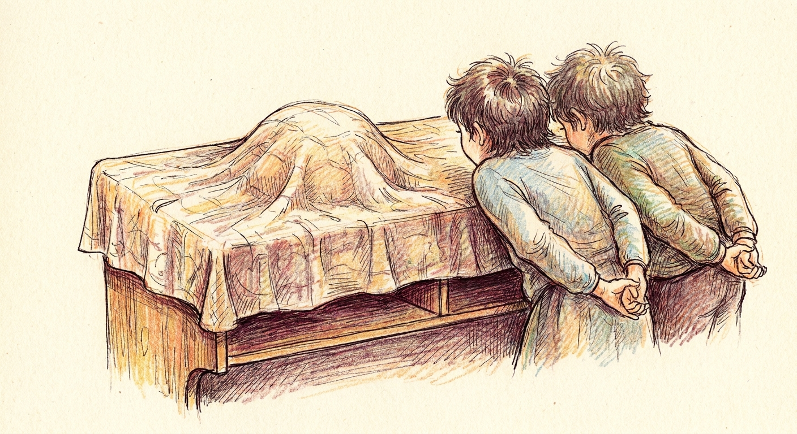
Covered object
Front benchPrep 2 min3 min in lesson
Cover an object linked to the unit with a cloth or box.
It sits there for a whole lesson before the one that needs it.
Students get one closed question each on the way in. Yes or no answers only.
Uncover it at the point the content needs it. Not before.
Say this"One question each, yes or no. It gets uncovered when we need it."
Works because curiosity peaks in the gap between a little and enough. The cloth holds the gap open.
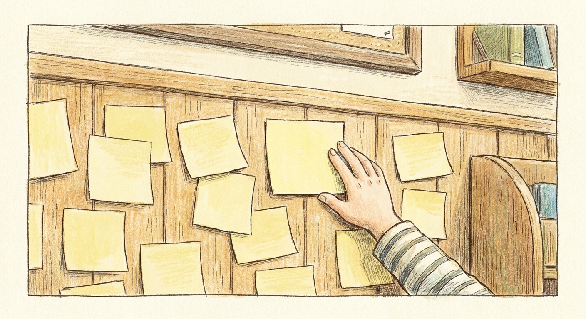
Wrong answer wall
One wall panelPrep 5 min once4 min weekly
Claim one panel of wall. Sticky notes, one colour.
Students post plausible wrong answers and misconceptions for the current unit, unnamed.
Once a week the class picks the most convincing wrong answer.
Dismantle it together at the board.
Say this"Which of these would fool a sensible person, and why?"
Works because it makes being wrong the material of the lesson instead of a personal risk.
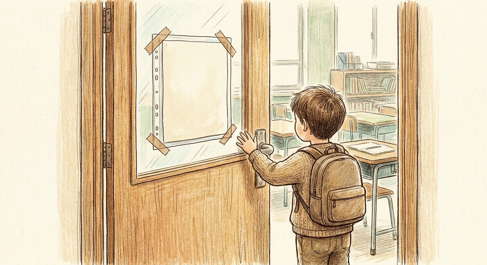
Threshold question
DoorPrep 1 min per lesson3 min
One A4 sleeve on the door, one marker.
Write one question. Change it every lesson. Never assess it.
Students answer out loud or on a note as they cross the threshold.
Once seated, ask three students by name for their answer.
Say thisthe question itself, asked back by name.
Works because it converts corridor energy into lesson energy at the one moment every student passes the same point.
The Pupil Corner
1 metre squarePrep 10 min once2 min weekly
Mark one area. A metre square is enough. It is the students' own curated space.
One artefact, clipping or question gets added each week, chosen by the students and built on current student need.
The teacher reviews the corner with the students at the start of the lesson.
Build the next five minutes of teaching on what it holds.
Say this"Two minutes at our corner. What did you add, and why now?"
Works because interest sourced from peers lands harder than interest sourced from you.
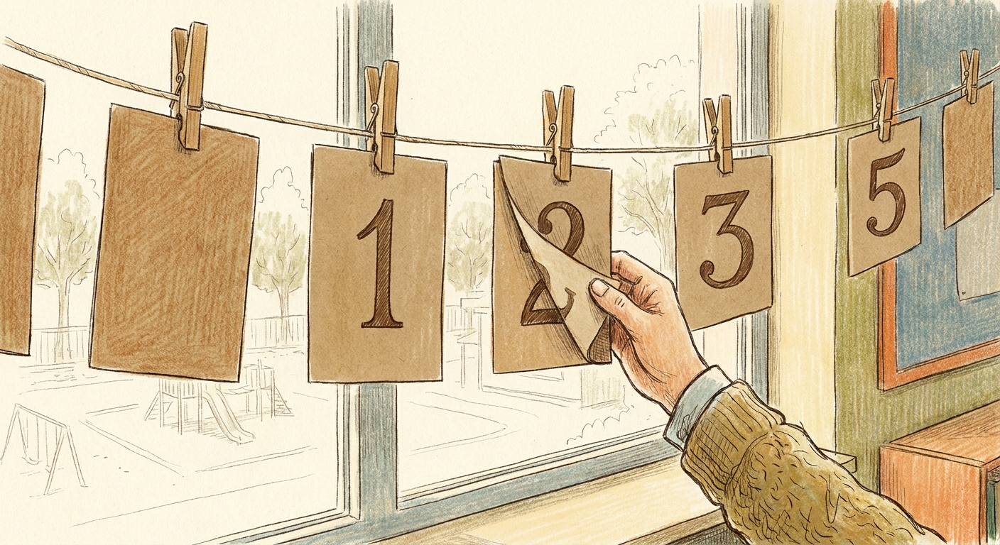
Countdown reveal
Wall stripPrep 15 min per unit2 min
Make one numbered card per lesson in the unit. Each hides a fact, figure or fragment.
Pin them in a row on a wall strip or the window.
Turn one card per lesson. The last card resolves the sequence.
Ask what the new card changes about last lesson's conclusion.
Say this"Card four. What does it change about what we thought on Tuesday?"
Works because students track a story more readily than a scheme of work.
Walkthrough: what to look for in 15 minutes
Students talking about content inside the first two minutes.
At least one element students put there, not the teacher.
Errors and half-formed ideas visible and unpunished.
Interest that survives the teacher leaving the front.
Fails when
The hook goes nowhere. Novelty replaces content and it stops working. Every setup here must land on the lesson's actual knowledge inside five minutes.
From the book · Gadsby & Evans on this strand (Introduction theme 2, Kindle loc. 363-407)
"Irresistible" learning. An environment compelling enough that even reluctant students get hooked. Atmosphere is cultivated deliberately.
Room transformations. Real examples: a classroom as Tutankhamun's tomb, a corridor as a First World War trench. The space itself can carry the hook.
Learning is sensory. Unexpected elements create intrigue, but never novelty for its own sake: the hook must land on content fast.
Game structures. Learning presented as levels, so students chase the next level with mastery as the incentive.
Relevance offset. Disengagement is offset by showing real-life application of the skill being built.
03
Retrieval and revision
Use this strand when: last term's content has evaporated, students recognise material but cannot produce it, or revision means rereading and highlighting.
Start here today: run tomorrow's starter with books shut for three minutes. Zero prep.
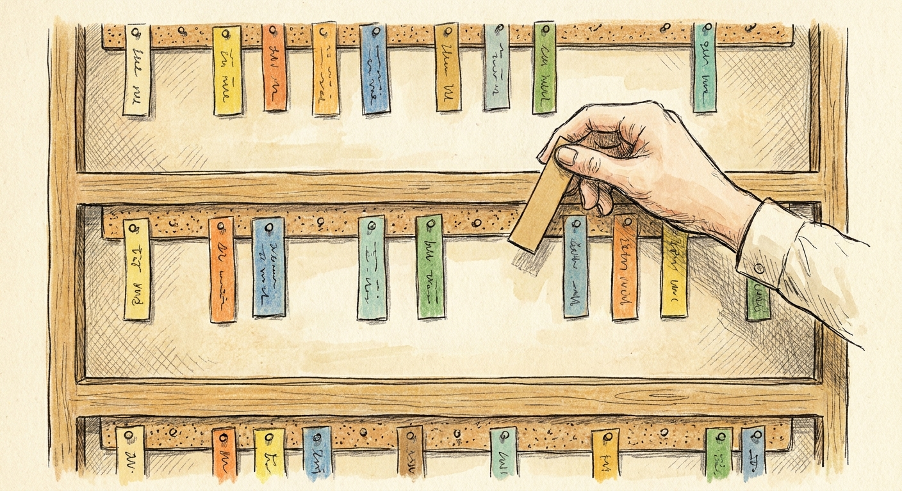
Three shelf knowledge wall
One wallPrep 20 min + 2 min weekly5 min starter
Divide one wall into three horizontal bands. Card strips, three colours.
Band 1 is this fortnight, band 2 is this term, band 3 is last year.
Every starter takes 1 question from band 1, 2 from band 2, 3 from band 3.
Items move down as they age. Nothing is ever removed.
Say this"Two from the bottom shelf first. Those are the ones you think you forgot."
Works because spacing beats massing, and the wall stops the schedule quietly lapsing.
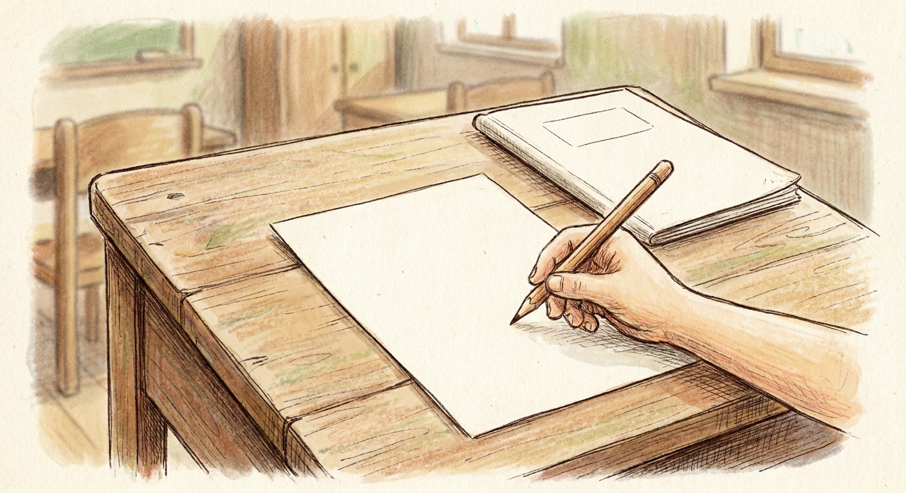
Blank first, book second
BooksPrep 05 min
Books shut, silent, three minutes on the retrieval questions.
Books open. Correct in a second colour, two minutes.
Read the corrections, not the scores. They are your diagnostic.
Say this"Shut, silent, three minutes. Then you get your book back."
Works because the effort of pulling it out is what strengthens memory. Looking first feels productive and does almost nothing.
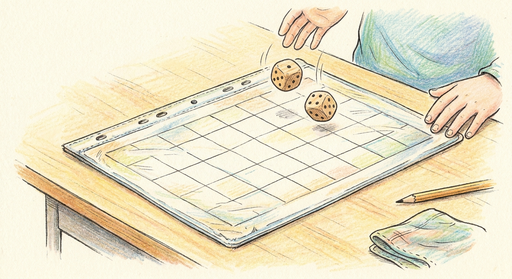
Question grid on the tabletop
DeskPrep 30 min per unit5 min
Build a 6 by 6 grid of questions for the unit. One per table, in a wipe-clean sleeve.
Two dice per table. Students roll for a coordinate.
They answer out loud in pairs. Partner checks against a small answer card.
Four rolls each, then stop.
Say this"Four rolls each, out loud, partner checks."
Works because random selection stops students rehearsing only what they already know.
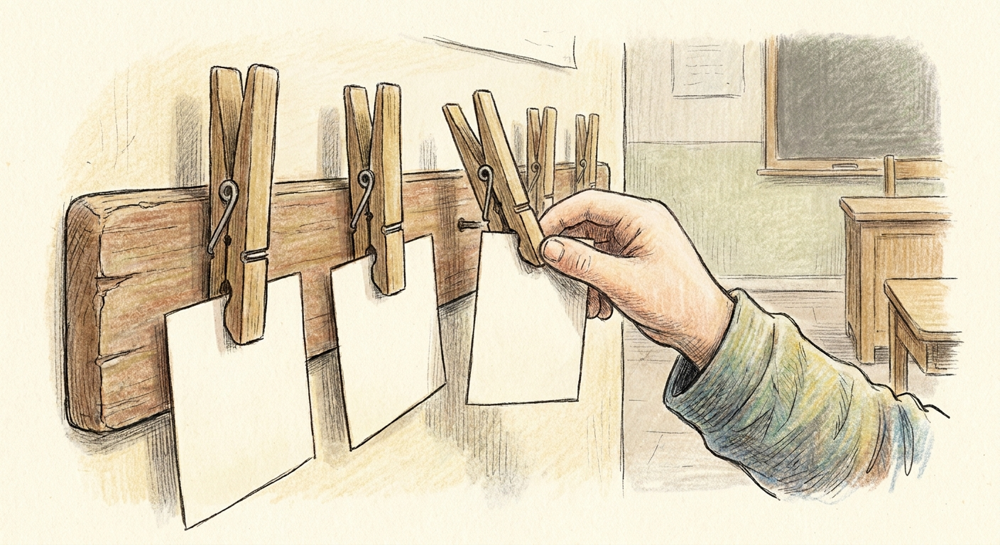
Forgetting queue
Back wall or corridorPrep 10 min once3 min
Put a line of pegs or clips on the back wall or in the corridor.
Any question the class collectively fluffed goes up with the date.
Pegged questions reappear in starters until the class answers them cleanly twice.
Retired questions move to a visible "beaten" pile.
Say this"Two off the queue. Beat them and they come down."
Works because the class's own gaps set the schedule, and the shrinking queue is the visible progress that keeps them buying in.
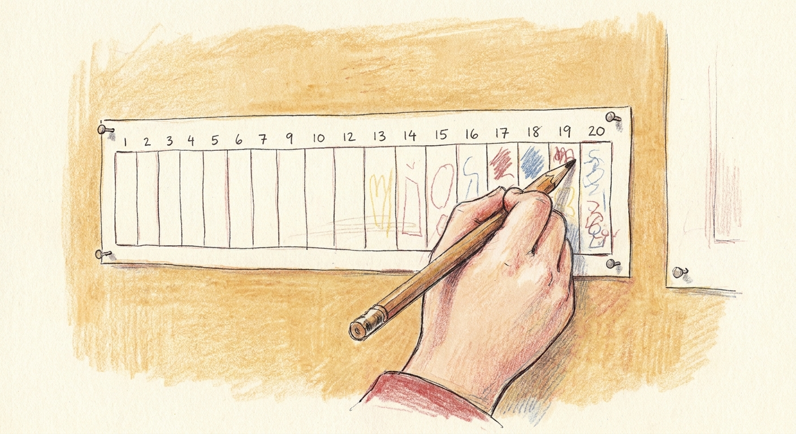
Twenty word summary strip
Wall stripPrep 10 min once3 min
Pre-cut paper strips with twenty boxes printed on each.
Last three minutes, one student (rotating) writes the lesson in exactly twenty words.
Pin it in sequence. The strip becomes the unit's revision spine.
Each writer reads the previous three entries first.
Say this"Exactly twenty. Read the last three before you write yours."
Works because the constraint forces selection instead of copying the board.
Walkthrough: what to look for in 15 minutes
Retrieval from memory before any resource opens.
Questions reaching back past the current unit.
Students correcting their own attempts, not receiving a score.
Something on display tracking what the class has not yet mastered.
Fails when
Nothing changes as a result of the answers. That is assessment theatre. Every setup here has to feed either the next starter or the next explanation.
From the book · Gadsby & Evans on this strand (Introduction theme 3, Kindle loc. 407-437)
Performance is not learning. What students can do at the end of today's lesson is a poor predictor of what sticks. Design for long-term learning.
Desirable difficulties, run through the room. Spacing, letting material fade before returning, generating answers from partial cues, frequent low-stakes testing, varying conditions, interleaving topics.
The wall as a revision record. Displays that hold past learning for frequent, active revisiting. Their paired paper plates read "What have you learned?" and "Prove it!".
One energy. Retrieval and revision replace passive rereading with active revision built into the room, all term, not just before exams.
04
Responsive teaching
Use this strand when: you discover the gap while marking at home, the same three students answer everything, or support for vulnerable students is planned in advance and never adjusted.
Start here today: put a wipe-clean board and pen on every desk, where students can reach them without asking. Ten minutes.
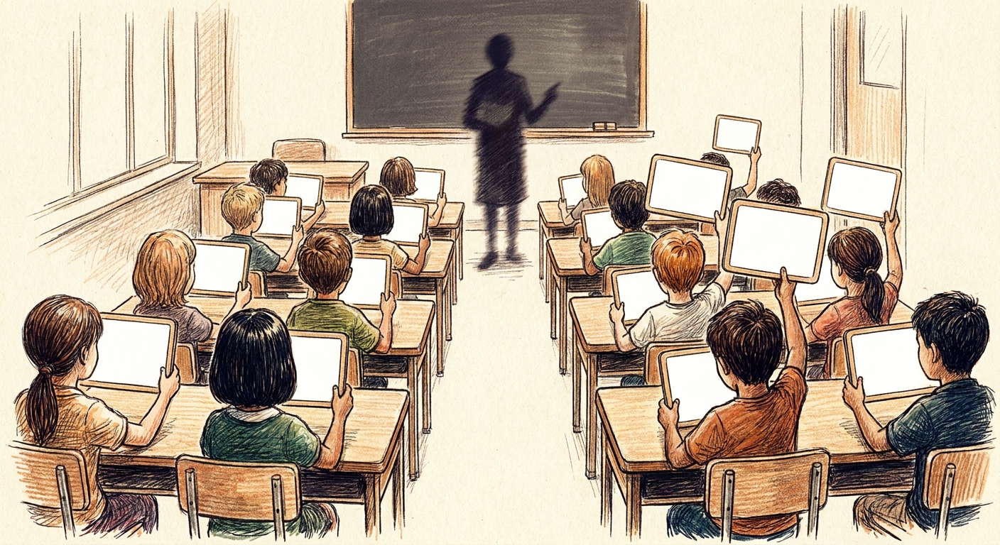
Whole class response boards
Every deskPrep 10 min once8 seconds per check
One A4 wipe-clean board and pen per student, stored within reach.
End every explanation with boards up.
Scan, say what you saw, then either move on or reteach on the spot.
Collect nothing.
Say this"Boards up on three. I am reading the room, not marking you."
Works because it turns a sample of two students into a full class read in about eight seconds. That is the only way to make a real in-lesson decision.
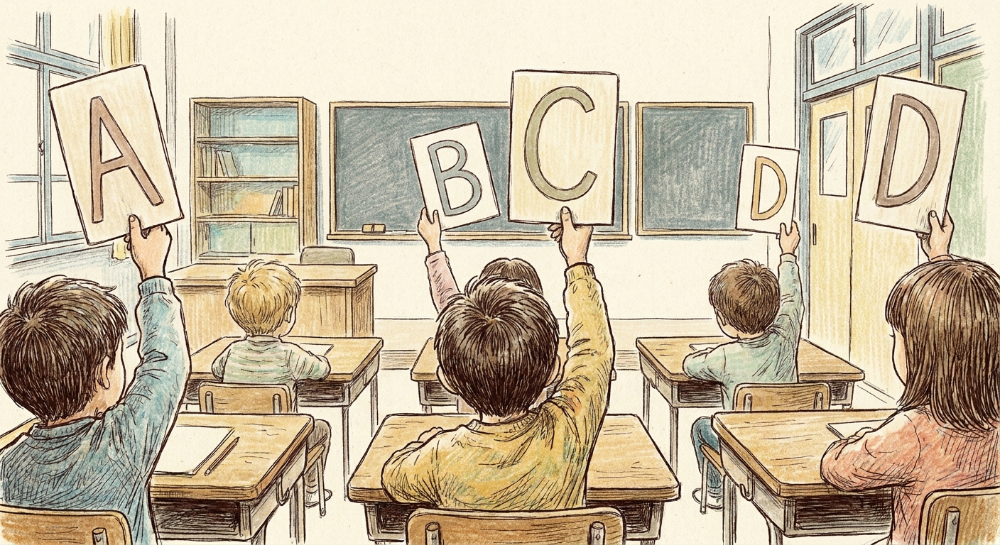
Hinge point
Mid lessonPrep 15 min, reusable2 min
Write one multiple-choice question for the lesson's midpoint.
Make each wrong option reveal a specific misconception.
Whole class answers at once, lettered cards or fingers.
Have two next moves ready: one for a strong response, one for a weak one.
Say this"Show me. No looking sideways."
Works because it tells you which misconception you are dealing with, not just how many students are wrong.
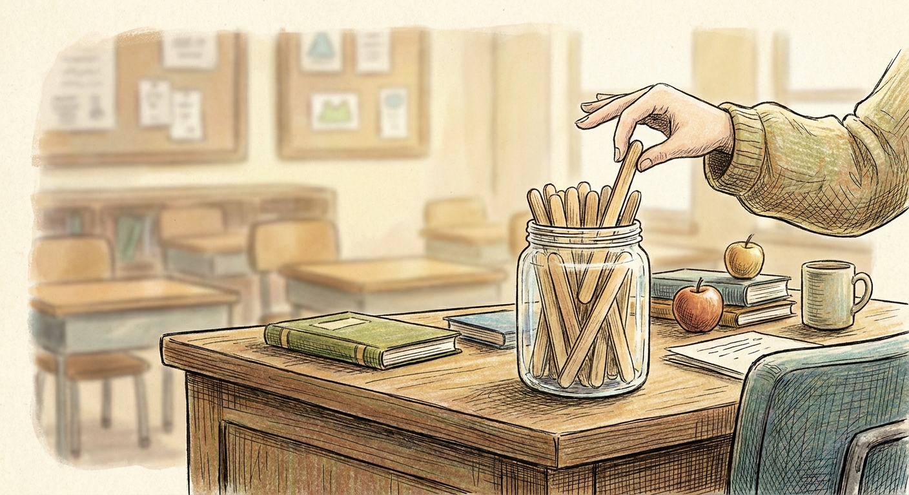
Weighted name draw
Jar on deskPrep 10 min onceNo extra time
Lolly sticks with names in a visible jar.
Add duplicates for students you need to hear from more often: quiet, new to English, on your vulnerable list.
Thinking time first, then draw.
Return the stick, so nobody is safe after their turn.
Say this"Sticks are in. Thinking time first, then I draw."
Works because hands up systematically over-samples the confident. Weighting the jar is targeted support that costs no planning time.
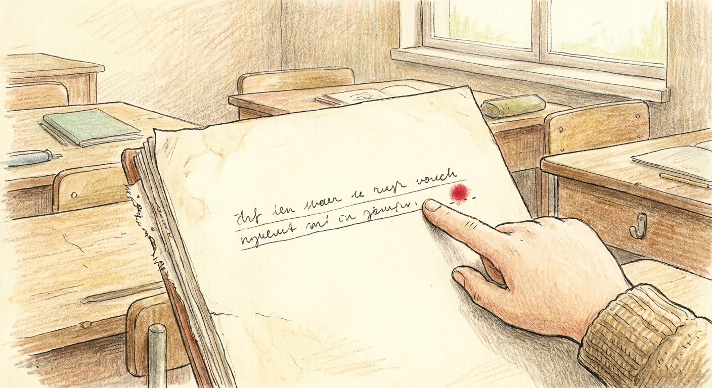
Traffic light margin
Student booksPrep 090 seconds
Students mark the margin beside the exact line where they lost confidence.
Not a rating of the whole task. One located point.
You circulate reading margins only. A full class takes about 90 seconds.
Say this"Mark the line where it went wrong, not the whole page."
Works because whole-task self-rating is noise. A located difficulty is actionable.
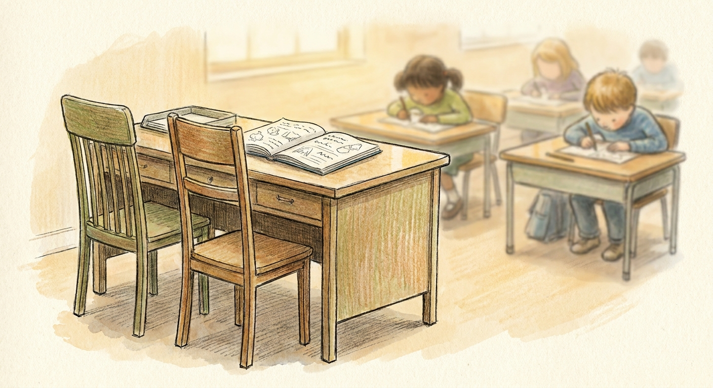
Two seat surgery
Side tablePrep 04 min
Put two chairs beside your desk or a side table.
The boards check or margin scan names two students.
They bring their book for a four-minute reteach while the class works.
Rotate the seats visibly so it reads as normal, not remedial.
Say this"Surgery seats: two names, four minutes, bring your book."
Works because immediate and specific beats an intervention next week, and it stops the gap compounding.
Walkthrough: what to look for in 15 minutes
A whole-class check in the first ten minutes, followed by a visible teacher decision.
Questioning distributed beyond volunteers.
One student getting support that was decided in this lesson.
The teacher changing plan out loud: "we are going back to X because".
Fails when
Boards go up, the teacher says "well done" and moves to the next slide regardless. If the check cannot change the next five minutes, do not run it.
From the book · Gadsby & Evans on this strand (Introduction theme 4, Kindle loc. 440-476)
The scale of the prize. Formative assessment woven into minute-to-minute teaching produces some of the largest known gains: roughly half a grade per student per subject.
Seek less, respond more. Where assessment for learning fails: heavy collecting, starved responding. Every check exists to change the next five minutes.
The room must flex. Can you regroup students quickly and work with a small group without derailing the class?
A named help zone. Base yourself in a fixed spot students come to: their Helpful Huddle and Secret Challenge, plus Go and Stand.
Participation is obligatory. Inclusive, high in cognitive demand, and impossible to opt out of.
05
Oracy and word wealth
Use this strand when: answers are one word long, students know the technical vocabulary but never say it, EAL students are silent, or written work is far stronger than anything you hear.
Start here today: print six sentence stems and tape them along the wall students face, at seated eye height. Ten minutes.
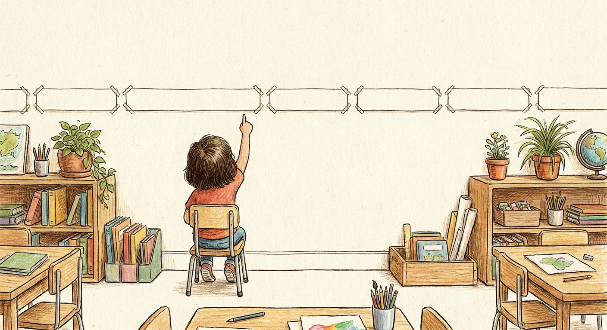
Sentence stem strip
Wall students facePrep 10 min onceNo extra time
Choose six to eight stems that are your subject's talk moves: "the evidence for that is", "I would challenge that because", "building on what Layla said".
Print them large. Tape along the wall students face, at seated eye height.
Answers must start with a stem.
Students may point at the one they are about to use.
Say this"Start with a stem. Point to it if you need a second."
Works because students who sound inarticulate usually have the idea and not the frame.
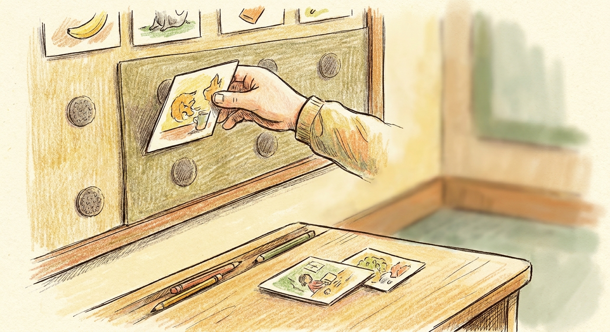
Word wall students take words off
BoardPrep 20 min per unit1 min
Put each unit's words on removable cards. Velcro dots or pegs. Not printed lists.
Students take the card they need to their desk.
The word must appear in their work before the card goes back.
Cards nobody takes tell you which words are dead. Replace them.
Say this"Take two words to your table. Both have to appear in your paragraph."
Works because vocabulary is learned through use, not exposure. The traffic is also your data on which words students avoid.
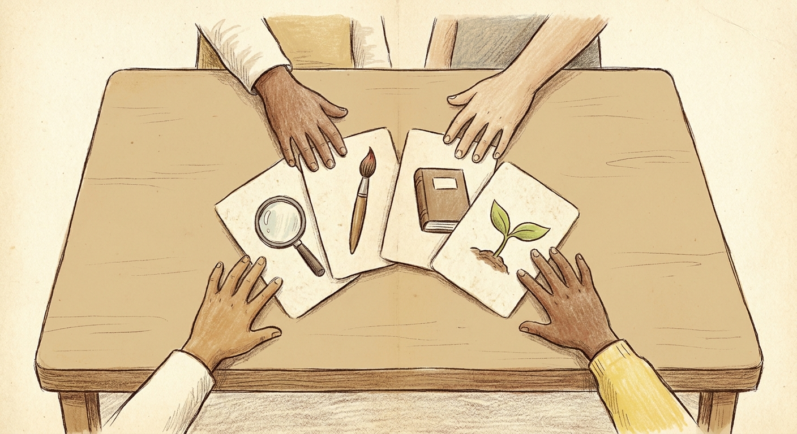
Talk roles on the table
Table centrePrep 15 min once4 min
Make four role cards per table: builder, challenger, summariser, evidence keeper.
Rotate roles every discussion.
The summariser reports back in one sentence and names who contributed what.
Take three summarisers, not one.
Say this"Roles up. Summarisers, I will take three of you in four minutes."
Works because unstructured discussion rewards the confident. Roles distribute airtime by design.
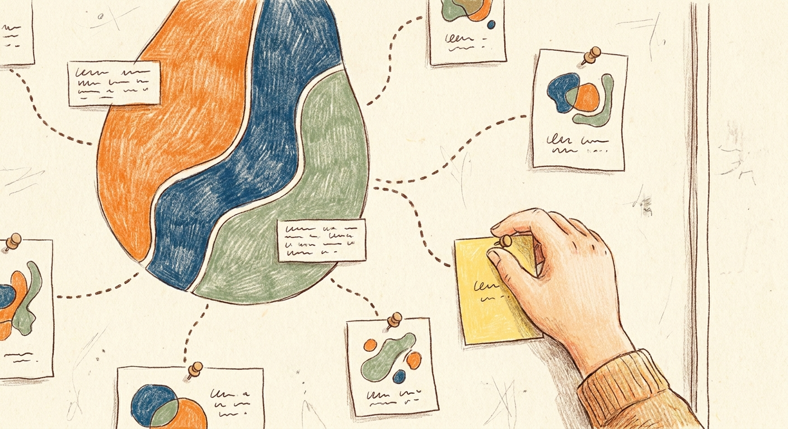
Etymology corner
Small panelPrep 5 min per fortnight2 min
One word per fortnight on a small panel, broken into root, prefix, suffix.
Add three relatives that share the root, at least one from another subject.
Students add relatives they find.
Say this"What else in the room shares that root?"
Works because morphology gives students a mechanism for unfamiliar words instead of a list to memorise. Biggest gain for EAL students and weaker readers.
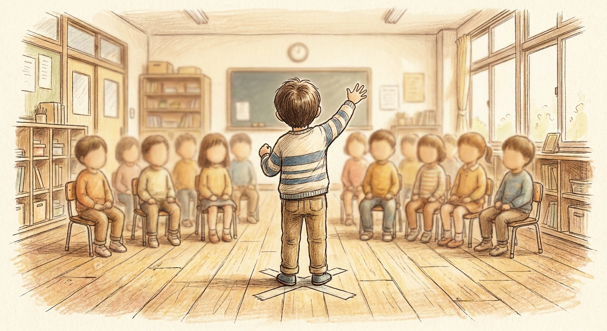
Sixty second subject talk
Marked floor spotPrep 2 min2 min
Mark a spot on the floor facing the class. Tape is enough.
One student per lesson stands there and talks for 60 seconds on a prompt from the unit.
Minimum two words from the word wall.
The class listens for those words and signals when they hear them.
Say this"Sixty seconds, two words minimum. Everyone else is listening for them."
Works because sustained speaking is a separate skill from answering questions, and most students never practise it.
Walkthrough: what to look for in 15 minutes
Full sentence answers containing subject vocabulary.
Students using or physically taking words from a display.
Structured talk with more than three students contributing.
One student speaking longer than fifteen seconds uninterrupted.
Fails when
The vocabulary is displayed beautifully and never spoken. No traffic inside a fortnight means fewer words and a reason to use them.
From the book · Gadsby & Evans on this strand (Introduction theme 5, Kindle loc. 480-537)
Why the stakes are high. The word-gap research: early vocabulary correlates with later reading, employment and wellbeing outcomes.
The word-rich classroom. Explicit vocabulary teaching well beyond glossaries: active engagement, spaced returns, varied conditions of use.
Word circles display. Ambitious words as big coloured discs, with students sticking synonym notes and used-it-in-a-sentence notes onto each.
Dialogic talk. Talk where both teacher and students make substantial contributions and thinking visibly moves forward.
Boys especially. Boys need the vocabulary for emotional expression too: oracy work is pastoral work.
06
Collaborative learning
Use this strand when: group work produces one poster and three spectators, the same students always scribe, or collaboration is really just seating.
Start here today: take three pens off every group of four and leave one. One minute.
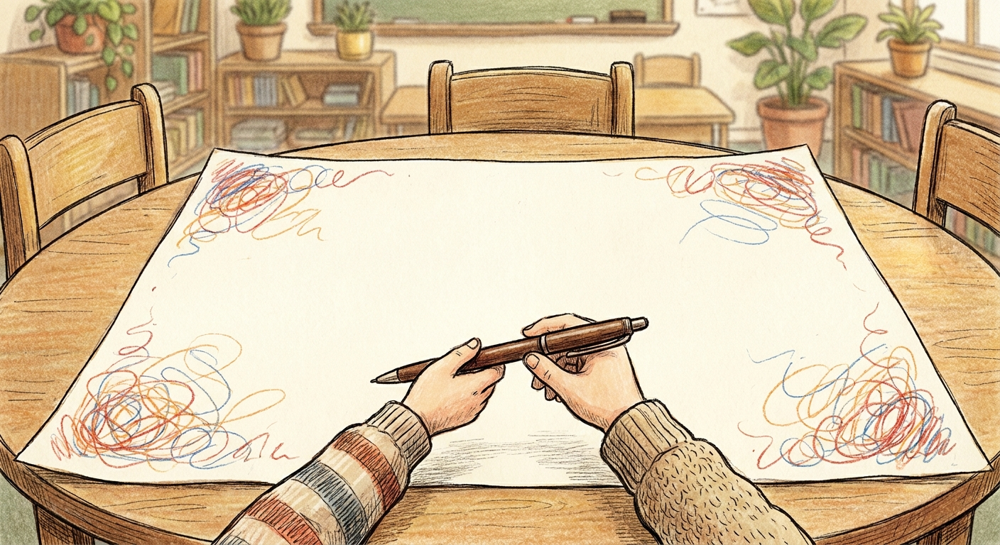
One pen, four hands
Table of fourPrep 1 min10 min
One shared A3 sheet and one pen per group of four.
The pen passes after every sentence. Physically.
At the end, each student signs their sentences in their own colour.
You read the colours, not the content, to see contribution.
Say this"Pen passes every sentence. I will be reading the colours."
Works because free riding becomes visible without you policing it, and the group has to agree before anything gets written.
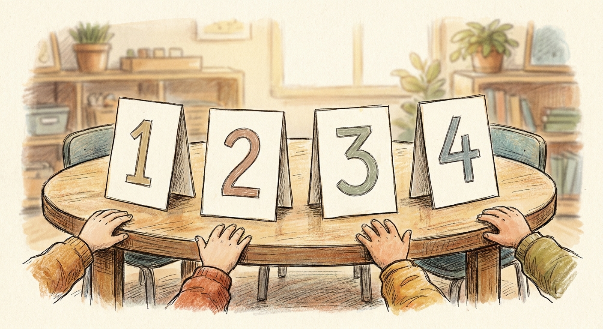
Numbered heads
Tables of fourPrep 5 min onceNo extra time
Number cards 1 to 4 on each table.
Set the task. Tell them one number will report for the whole group.
Draw the number at the end.
Bringing everyone up to speed is the actual work.
Say this"Any number can be called. Make sure your threes can explain it."
Works because shared accountability plus individual answerability is what makes cooperative learning beat ordinary group work.
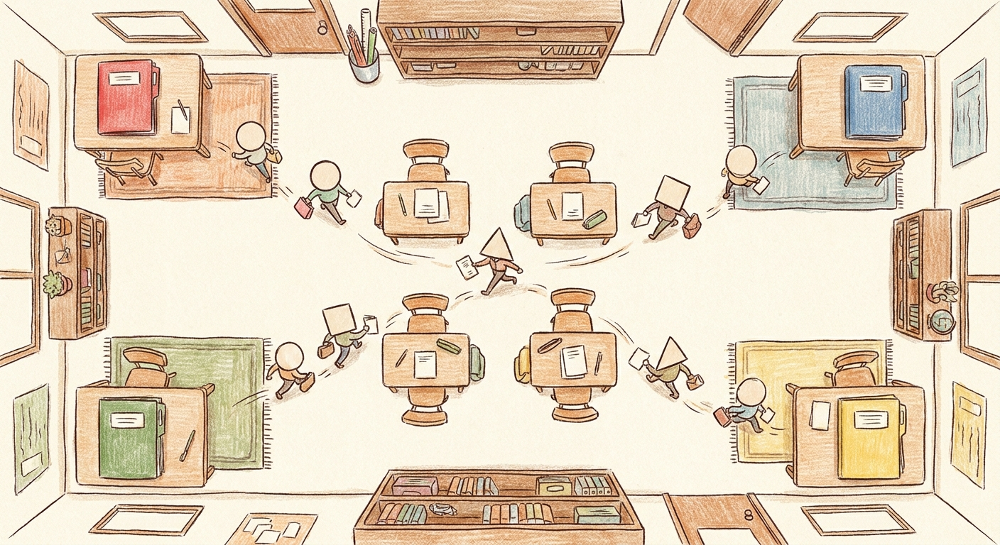
Jigsaw stations
Four stationsPrep 20 min per topic20 min
Put one short source at each of four stations.
Round one: students become the expert on their station.
Round two: regroup so each new group holds one expert per station.
Design the task so it cannot be finished without all four pieces.
Say this"You are the only person at this table who saw source three."
Works because interdependence is built into the task instead of requested.
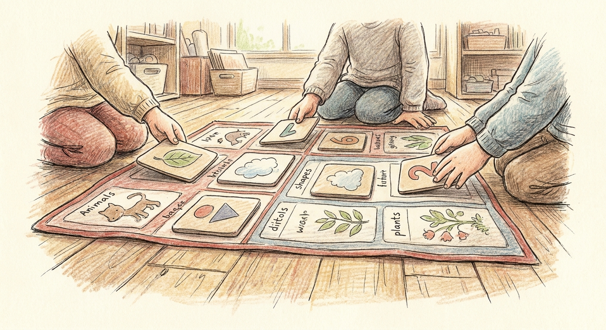
Silent build
Floor or joined tablesPrep 10 min per card set8 min
Give each group cards, a sorting mat or physical pieces.
First four minutes are silent. Move, place, reorder, gesture. No talking.
Talk opens after, starting from a shared arrangement.
Say this"Four minutes silent. Move things, do not talk."
Works because silence removes the fastest talker's dominance and buys processing time for students who need it, including EAL students.
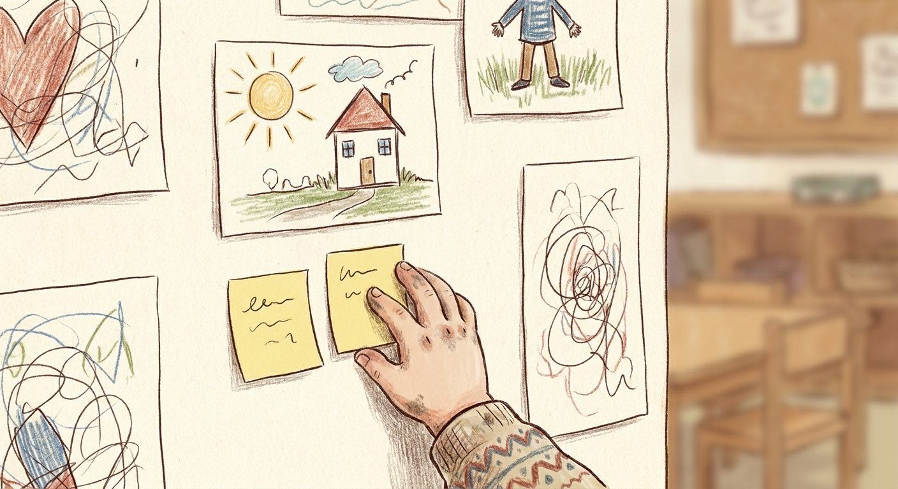
Two group critique swap
Work at student heightPrep 08 min
Display work at student height. Two groups swap.
Each group leaves exactly two sticky notes: one specific strength, one specific question.
Use the sentence stems from strand 5.
Original groups get five minutes to act on the notes before the work counts as finished.
Say this"Two notes. Specific, or it does not count."
Works because critique is where collaborative work actually improves. Two notes keeps it honest and fast.
Walkthrough: what to look for in 15 minutes
Every student in a group producing something identifiable as theirs.
A task one student could not complete alone in the same time.
Students talking to each other about content, not to the teacher.
Groups acting on feedback before calling the work done.
Fails when
There is no structural reason to collaborate. If a confident student could do the whole thing alone in the same time, split the information or drop the grouping.
From the book · Gadsby & Evans on this strand (Introduction theme 6, Kindle loc. 537-561)
In groups is not as groups. Most classrooms seat students in groups without designing work that requires a group.
The evidence bar. Collaborative approaches are consistently positive, and the gains concentrate where tasks are structured for talk and interaction.
Past the superficial. Students learn to treat each other as learning resources: what is learned socially becomes internalised for independent use.
Climate of allies. Students challenge and extend each other's thinking without feeling exposed. Built deliberately.
The design pair. Every collaborative structure needs individual accountability and positive interdependence.
The technique library
Around one hundred and fifty named techniques from Dynamically Different Classrooms, retold in our own words with chapter locations so you can find the originals. The six strands above are AIS practice; everything below is Gadsby and Evans' own catalogue.
Chapter 1 · Beyond displays: from static to dynamic
Kindle loc. 560-1213 · walls stop being decoration and become a place students think
Re-energising displays you already have
Reframing. Rewrite success criteria as questions beside the work, then strip prompts back to initial letters, then to nothing.
Pick a Prompt. Thought and speech bubbles with speculative openers, positioned for students to complete.
Label the Learning. Students annotate displays with symbols they must be able to talk about: red herrings, challenges, linked ideas.
Tag It. Sticky notes and a pen attached to the board until posting a comment becomes routine.
Revisit, Resurrect and Revive. Interrogate old exemplar work with the students who made it, and expect additions.
Extending the Thinking. Challenge-coded questions beside key learning; students must post their answers, so engagement is provable.
Beyond the word wall
In or Out. Words quietly appear or vanish from the display and students spot the change.
Split Them Up. Terms separated from definitions for students to re-pair.
Prioritise. Which three displayed words matter most to this topic, argued out loud first.
Taboo. Describe the key term without using its four or five associated words. Making the cards is the harder thinking.
Top Trumps. Score vocabulary against criteria, then argue the scores. Students build the deck.
Jeopardy. Each pair gets a keyword and writes the question it answers.
Define and Defend. Definitions critiqued and argued to an agreed final version for the display.
Odd One Out. Which displayed keyword does not belong, and why. No single right answer.
Connect Four or More. A giant unlabelled vocabulary display; students find the patterns and categories themselves.
Using disruption
Cover Up. Sticky notes over words or images; pairs reproduce what is hidden.
Mix Up. Something is removed from, or planted in, a display. Students hunt the change.
Blanket Coverage. A sheet over a whole area overnight; teams compete to recreate what was underneath.
Building new displays
Draw Them In. One enormous intriguing image, no caption, left for speculation before you teach into it.
Powerful Projection. Project onto the ceiling with students lying on the floor holding key questions in mind.
The Mouth of Truth. Students pull statements from a decorated box and must prove whether each is true.
Gift Bags. Bright bags in dead low-wall space, labelled as mystery challenges to dip into.
Evolving, learner-generated displays
Cabinet of Curiosities. A cabinet of artefacts and intriguing images, made stronger by students' own treasures.
KWLP grids. Know / want to know / learned, plus P: prove it, in a format the student chooses.
Prod and Prickle. Deliberately provocative displays: an incorrect statement students must correct with evidence.
Park It Board. A named place to park any idea that needs flagging or more explanation.
Teacher No-Go Domain. Boards the teacher does not touch: students set challenges and interpret the learning in their own words.
Marketplace. Trios build a fast display on one aspect of a unit and sell their wares to the circulating other half.
Another Brick in the Wall. A blank wall built brick by brick with key learning over a series of lessons.
The Bottom Line. The bottom half of a wall as an invitational drafting surface at younger children's eyeline.
Analogy Alley. Students build analogies for hard concepts, then keep returning to explain them.
Gamification
Board Games Repurposed. A giant familiar board on the wall, played standing, with backward moves sneaking in extra practice.
Roll the Dice / Learning Grids. A six by six grid of prompts; pairs roll to pick their cell, colour-coded by difficulty.
Students as learning resources for one another
Calendar Challenge. An advent-style calendar of challenges, one window a day, opener's name left as an "ask me about it" prompt.
Whispering Wall. Recordable speech bubbles for leaving and listening to tips and critique.
Really Useful Stuff Board. Students display a unit's essentials outside the room for other classes, who can add their own.
Critique Circuit / Progress Parade. Students tour current work giving SWAN feedback: strengths, weaknesses, next steps.
Developing independence
Get Set, Go. No explanatory introduction: instructions and roles live in an agreed place or are hidden as a treasure hunt.
Moving On. Students record one significant point in their learning and how they moved past it, in a medium they choose.
Learning Journeys. The unit as a large journey map; students place their avatar and decide their next step.
Remember When / Déjà Vu. Photos of students mid-learning, annotated soon after and again much later to test retention.
Aspiration and iteration
Famous Failures. Real repeated-failure stories with the numbers separated for students to match, then students post their own failure statistics.
Process or Product? Work in process beside end products, with large student annotations on how they moved between drafts.
WAGOLL versus WASOLL. What a good one looks like beside what a substandard one looks like, then students design their own for others to judge.
On This Day. Every student in the school does the same task on the same day, displayed so progression across years is visible.
Rolling Forward. Significant work passed to the next teacher on a paper roll, reworked and extended through the year.
Front-loading
Big Question. The end-of-unit question brought forward to the start for students to preprocess.
Big Picture. The whole unit plan shared at the outset, kept visible, adjusted with the students.
Case studies
Working window. A double-sided place value chart on the glass, new questions every few days; engagement evidenced by finger marks.
Terminology team challenge. Question and answer strips in mystery envelopes, two teams racing to pair them, then annotating with linking arrows.
Connections challenge. A card sort where trios generated their own category headings, then extended a larger display.
The elf on the shelf. Fifteen minutes of low-prep overnight disruption across several displays; students self-selected challenges on entry.
Beat My Best board. Students tracked their own practice-exam scores and pulled formative targets out of summative data. The only competition was with themselves.
Learning leaping off the walls. A rivers display holding a prior-knowledge thought shower, refined over time, plus QR codes to student-made videos.
Mark the mistakes. A languages WABOLL with twelve deliberate errors; pairs agreed, highlighted and annotated them into a WAGOLL.
Chapter 2 · Nothing wasted: storing learning to revive later
Kindle loc. 1221-1569 · nothing students produce gets binbagged; store it visibly, haul it back weeks later
Prominent storage vessels
Hidden in Plain Sight. Evidence of prior learning in obvious containers, visible but not touchable yet.
Crowdsourced snowballs. Anonymous key ideas scrunched into snowballs, verified together, best sealed in the snowball jar.
Secret Scrolls. Scroll-stored learning heaped like an ancient library; ordering and connecting them becomes the activity.
Rolling Up and Rolling Out. The class's best work stored ceremonially on big rolls, unrolled periodically with recall first.
Stepping Back in Time. Floor challenges stored in mystery envelopes; prior learning is coming back, students just never know when.
Hibernation. Taking a display down becomes a ceremony: what is secure, what could you teach, what needs recapping first.
The ceiling as cloud storage
Space Rocket. A tube of learning evidence hoisted to the ceiling at consolidation, brought down later with a countdown.
Paper Chains. Key points linked into hanging chains, colour-coded meaningfully, later dismantled and rebuilt into new forms.
Lucky Dip. An open umbrella suspended by its handle storing secure learning; dip in later, or reopen it so the contents scatter.
Balloon Burst. A net of balloons overhead with messages inside, released at a strategic moment.
Helium Hideaway. Keywords inside helium balloons at varied heights; they slowly descend back into the room over days.
Brag Tags. Wristbands carrying a personal target, worn until the student proves it is met, then displayed as evidence.
Linking the Brag Tags / Bonanza. Tags linked into growing chains; you cannot add one unless you can prove you still understand it.
Treasure Hunt. Large hanging prompts navigated by connecting one to the next, with new route rules each time.
Significant Symbols / GAS. Hung symbols for key ideas; students answer by physically standing under their choice.
Umbrella Questioning. Questions on the spokes of a hanging umbrella, answers clipped to the handle's crook.
Overarching Umbrellas. One umbrella per exam component; students stand under their weakest, giving you self-selected reteaching groups.
Ceiling Circuits. The umbrellas turned into a circuit-training course, groups rotating on a signal.
Memory Mobiles. Mobiles and washing lines with key points written as cryptic coded clues.
Tasty Tacos. A folded paper plate stuffed with questions, clues and riddles, some coded extra spicy for self-selected difficulty.
Take Down the Tacos. Groups work through a taco's contents and present answers back to the creators for critique.
Message to Myself. A letter to their future self, opened at a chosen moment; a postbox collects extra memos.
Bunting. Triangular cards with key points along each edge, tessellated by circulating students, cut down later to relink from memory.
Case studies
Clearly challenging. Transparent envelopes of extension challenges on a washing line, visibility controlled as tantaliser or invitation.
Maximising mock exam feedback. Year 11s distilled all exam feedback onto one sheet, sealed it in a taco labelled with a symbol for their most important message.
Tessellating triangles. Bunting used mid-sequence as a mini-plenary that told the teacher whether prior learning was still live.
Remember then reassemble. Colour-coded question and answer chains sent up in random order, later dismantled and matched.
Grabbing hold of the knowledge. An immersive Rousseau lesson with a nurture group, planned by asking the students first what would overload them.
Under my umbrella. Weather symbols sorting contributions: sun for known, cloud for anticipated, raindrop for a question.
GAS in design and technology. Cardboard tool cut-outs hung around the room; students stood under the right one in answer to questions.
Chapter 3 · Floors: not just for standing or sitting on
Kindle loc. 1582-1942 · the biggest unused surface; movement as memory marker and live diagnostic
Entrances and exits
Crossing the Threshold. A large stimulus taped just inside the doorway, with a varied instruction, replacing settling activities entirely.
Step Back in Time. The threshold slot used for retrieval, with confidence flagged: "I remember", "I think", "I'm not completely sure, but".
Threshold Tombola. A tombola at the door: tickets set groupings and zones, or mystery envelopes get sprung at random moments.
Powerful perimeters
Memory March. Students move around the room's edge chanting the topic's most significant message, tempo and direction kept changing.
Sweeping Glance. A brisk lap of the perimeter surveying the walls, then a memory challenge on what they just saw.
Stop and Take Stock. The lap with one rule added: stop at anything hard to understand. Where people stop is your reteaching list.
Thinking Circuits. A trail of related objects and questions around the edge; students walk it working out the connections.
GAS (Go And Stand). Choices in the corners; students stand by their answer, trained to walk past anything easy, and justify the position.
Moving in the middle
Stepping Stones. Large sheets of questions and tasks laid across the floor; being unsure means you stay until a peer teaches you off it.
Stumbling Blocks. Big boxes carry the class's main difficulties on their faces, rolled like dice and talked over.
360 Degree Flip. One key fact locked in by a movement drill repeated with steadily less support until it runs from memory.
Learning Arena. A cleared space framed as gladiatorial: step in and take questions from the spectators, in groups to lower the stakes.
Scaling Up. The hardest content made physically large on the floor: a Giant Inductive Grid to walk and talk, or a Giant Blockbusters Grid to compete across.
On a Roll. A long paper roll covered with the current learning; use each other before your book, and what gets looked up is your reteach list.
Story Sheets. A fabric sheet on the floor where students build a setting, stretched by introducing tensions to react to.
Big Circle, Little Circles. The class in one large circle physically moving oversized learning, then hula-hoop groups doing differentiated versions with talking chips.
Tap the Talent. Students must trade ideas with as many people as possible inside a set time.
Guided Tours. Only A can see the image; A guides B, eyes closed, around the room describing it, then B draws what was described.
Fully Immersed. Lights dimmed, an image projected onto the floor for students to work on together.
Inner Circle Zone. Six students inside an elastic loop; the rest earn their way in by contributing, with whispered clues encouraged.
Case studies
Going over high-frequency words. One keyword taped at each of three door thresholds, read aloud every crossing, many times a day.
Threshold objectives. The lesson objective on the doorway floor with one keyword missing: read it, write it from memory, predict the word.
Tiger feet. Story-moment pictures as stepping stones for early readers sequencing a familiar book, with a planted red herring.
On a roll with learning. Year 9 geographers around a paper roll, testing ideas on mini-whiteboards first; they owned the resource afterwards.
Lifting speech marks off the page. Oversized jumbled direct speech physically assembled in the arena, then hoop groups, then a GAS plenary.
Chapter 4 · Zoning: one classroom, endless possibilities
Kindle loc. 1953-2476 · discrete areas so students differentiate themselves and you see where you are needed
Zone types they suggest
The zone menu. Research, recording, problem-solving, curiosity, Prove It, making, impossible, quiet and reading corners: a menu, not a prescription.
Unexpected zones
Locked Up Learning. A cage of topic artefacts declared off-limits; the whole value is in the withholding.
Mystery Materials. A covered centre table leads the lesson. Reveal it Slowly or Quickly, or play Ready Steady Look and recall what was glimpsed.
Follow Your Symbol. Unexplained stickers on entry route students to matching zones later, with the group working out the task.
Under Wraps. Different coloured sheets over each table's activity, worked on stealthily so the mystery holds for the next group.
Make It Your Own. One theme (a racing circuit, a mountain climb) with the zones designed as its component parts.
Follow Your Quest. A whole-school treasure hunt of personalised, escalating challenges hidden around the building.
Language zones
Talk Tally. Focus words as a tally chart; a student adds their name once they have proved correct use.
Claim the Connective. Connectives on colour-coded cards, claimed on successful use, collected competitively.
Choice and challenge zones
Self-Selection. Different tasks set out to opt into, with one rule up front: there is no wrong selection.
Tantalising Trays. Extension tasks concealed in trays under the focal table; the pull is curiosity, not compliance.
Question Conundrums. Zones that prepare a big answer: research, discussion, brainstorming; prove you chose the right one.
Wandering and Wondering. Prompts visited in silence, personal responses left on sticky notes; the silence is the ingredient.
Ever More Challenging. Zones built on the SOLO taxonomy stages so progression through difficulty is a physical journey.
Pose the Impossible. An unsolvable conundrum on permanent open invitation, with clues dropped in at strategic moments.
Centre Stage. The teacher's desk moved to the centre and handed to rotating student pairs who pose the questions.
Responsive zones
Suspended Success Criteria. Differentiated criteria hung up; students stand by the one they need next, naming their own target.
Magpie Models. A zone of WAGOLLs students may enter to borrow words, phrases and ideas, on set terms.
Check Mate. Partners peer-assess against routine criteria, always ending on: proud of, do differently, main thing learned.
Coaching Conference. Themed zones for working in different modes: conference table, team huddle, coaching bench.
Rooted Teacher. Plant yourself in one named zone like a tree and have students come to you.
Helpful Huddle. A readily available space for pulling a small group out to work with during the lesson.
Magpie Me. You do the same task as the students but larger; they watch and memorise rather than copy, then transfer.
Secret Challenge. A prominent zone of intriguing sealed challenges: the probing questions you would otherwise ask aloud.
The Inward/Outward Classroom. Edge tables facing outwards for independent work, an inward conference area for guided reteaching.
The Permeable Classroom. Zoning across a whole department: teach Monday to Thursday, regroup students across classes for targeted Friday provision.
Colour-Coded Feedback. Feedback as a coloured dot; call the colour and the improvement grouping is already differentiated.
Progress zones
Prove It Place. A zone for mastery masterpieces refined over time; students choose how to consolidate and present.
Pupil Portfolios. A zone of portfolios students update themselves, combining metacognition with celebration.
Progress Portrait. One frame per student holding their current proudest piece, annotated and constantly replaced.
Progress Pull Out. Concertina wallets extending to show every draft, so progress reads as connected iterations.
Personal Power Profiles. Profiles of each student's genuine expertise; those students become named consultants for anyone who needs it.
Independence zones
Enable Table. Resources used before asking the teacher, including a tablet recording of your key teaching episodes to replay.
Earn It and Learn It. Peer help and the enable table are free; the teacher costs tokens. "Are you sure you want to spend a token on this?"
Clue Corner + the 4B Strategy. Colour-coded clue cards reached only after boards, books, brain and buddy; the teacher is the final B.
Give One, Take One. Take a clue card, leave one behind on something you are confident about. The corner restocks itself.
Expertise Area. Students as declared experts with badges inviting questions, plus a nominated VIP who visits to hear how the learning developed.
Teaching Takeover. Students routinely deliver part of the lesson, with questions and challenges going both ways.
Teach the Teddies. A designated mini classroom where students mimic teaching to consolidate, filmed and fed back on.
Teach It with Tech. Students research and present with the whiteboard, video, animation or podcasts, shareable beyond the class.
Review and Redesign. Small groups redesign a lesson you have already taught them, for a future class.
Pick a Card. A bank of difficulty-coded challenge cards, with a reflective log recording how each one felt to tackle.
Creation Station. Students collaboratively build a challenging task, or a game that teaches their new learning to another class.
Collaborative zones
Across the Barricades. A chair barricade splits the room; each team holds different information, so trading is the only route through.
Research Carousel. Media stations rotated on a timer; a team leaves only when every member is confident they have what they need.
Circuit Training. Tables as varied-mode stations rotated against the clock, with stepping-stone challenges in the transitions.
Case studies
Get on board. A maths Talk Tally kept up for the whole unit, with a daily focus on words not yet explored.
Maths that keeps you on your toes. A zoned Year 10 maths room: Roll and Stretch dice, a Stretch Wall on cupboard doors, an Impossible Corner in hazard tape.
Intriguing in-class interventions. A rooted teacher calling pairs to a Secret Challenge zone; envelopes marked with shapes, not colours, so no student could read the tiering.
Moving and thinking circuits. PE circuit training with differentiated stepping stones turning the transitions into thinking time.
Conclusion · The legacy of the learning
Kindle loc. 2489-2592 · the argument moves out of the single classroom and into the wider school
Wider spaces and wider collaboration
Query It, QR It. QR codes in visible places linking parents and visitors to what is currently being learned.
Corridor Content. Corridors carry the heaviest traffic, so fill them with interactive content aligned to whole-school priorities, not showcase work.
Chalk It Up. A big board at the gate or foyer carrying a live question, open for students, parents and visitors to add their thinking.
Guru Gallery. Personal Power Profiles scaled to the whole school, crucially including staff expertise, with leavers kept in the gallery.
Real Legacy Projects. Year-long collaborative projects on genuinely real issues, future-proofed so the next cohort inherits them.
Staff development (leader-facing)
Powerful Partners. Two teachers, one shared focus, same technique, short logs, then each talks to the other's students about the impact.
Networking. Real or virtual cross-school networks for sharing what you have been trying.
Staff Learning Wall. Staff progress made visible: photos of techniques in action, annotated, in a staffroom space.
Assembly Ensemble. Students build and give the presentation on what changed in their classroom. Students advocating beats a teacher advocating.
Frequented Foyers. The same student-made content as video in the school entrance, advocating to parents and visitors.
Room Request. If the room is a live resource, that has implications for room allocation, agreed at team level.
Subject Specifics. Subject meetings identify the specialism's hardest concepts, then decide how the environment addresses them.
Lifelong Learning. Photos of staff on courses, annotated with what they will do differently, where students can see them.
Performance Poem. Teachers complete stems, combine them into one piece and perform it on film; then students do their version.
Shared Solutions. A whole-school priority on a shared space with a pad of notes attached, so staff, students and visitors all contribute.
Their closing mantra
The line to open the first staff session with: "what we want for our pupils, we also want for our teachers."
Worked example: from observation to next step
A real AIS lesson observation (a Primary Digital Technologies lesson, mixed ability), anonymised. The Teacher Coach's notes went in; four Teacher Strategy recommendations came out. This is the transaction this playbook exists for.
1
Learning skills · Outstanding
3
Teaching · Good
4
Progress · Acceptable
The shape of the observation: routines, behaviour and relationships at the top of the scale, but a closed follow-along task capped how far students could travel. The Teacher Coach left four actionable notes, and every one of them maps onto a strand above.
Coach's note: "attach a condition or outcome to turn and talk, to boost accountability in student dialogue."
→ Talk roles (Strand 5)
Role cards per table; the summariser reports back in one sentence and names who contributed what. The report IS the condition and outcome.
Say this: "Roles up. Summarisers, I will take three of you in four minutes."
Coach's note: "check for understanding against the success criteria before the first activity; and how will the students who are already able make progress today?"
→ Hinge point + Secret Challenge (Strand 4 + ch. 4)
One misconception-revealing question before the task starts, with two pre-planned next moves. A challenge envelope zone gives the able students self-serve stretch: capped bottom, open top.
Say this: "Show me. No looking sideways."
Coach's note: "how do we ensure ALL students are engaged while one student is reading? For example, cold calling the next sentence."
→ Weighted name draw (Strand 4)
The stick jar decides who reads the next sentence, weighted toward students you need to hear more. Cold calling becomes infrastructure instead of a thing you remember to do.
Say this: "Sticks are in. Anyone can be next sentence."
Coach's note: "could this have run jigsaw-style, with students visiting different stations and then sharing their experiences? More collaborative."
→ Jigsaw stations (Strand 6)
Round one: each pair becomes the expert on a different station. Round two: regroup so every table holds one expert per station, and the task cannot be finished without all four pieces.
Say this: "You are the only person at this table who saw station three."
The coaching note that goes to the teacher (three lines, always)
Strand name.
One setup from that strand.
The sentence the teacher will say to activate it.
Example: Responsive teaching · Hinge point before task entry · "Show me. No looking sideways."